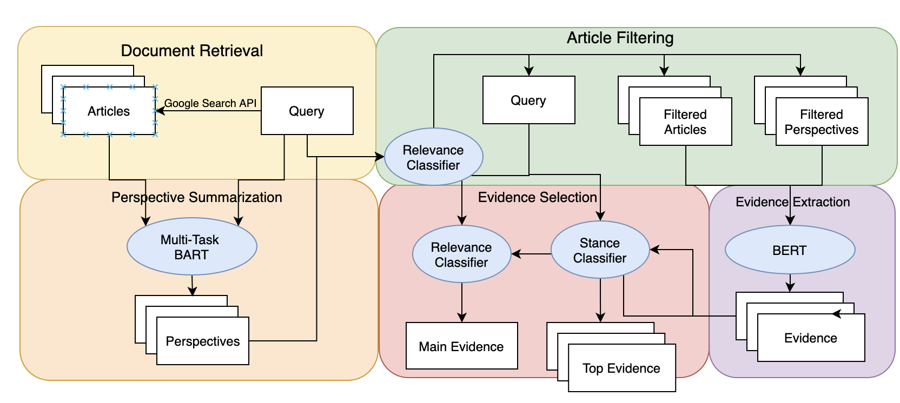
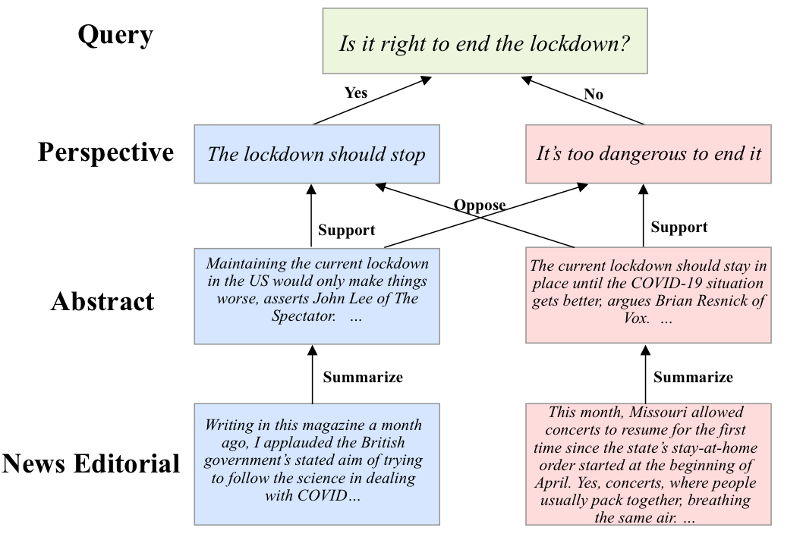
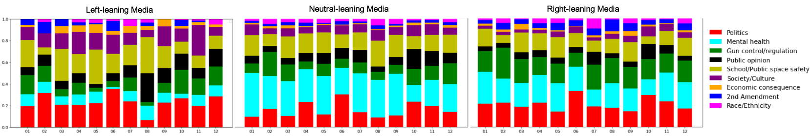

Siyi Liu
siyiliu [at] seas [dot] upenn [dot] edu
3401 Walnut St, Philadelphia, PA
About
I'm a second year master's student at Department of Computer and Information Science, University of Pennsylvania.
Currently, I'm working with Prof. Dan Roth on perspectives discovery of news articles, and Prof. Mark Yatskar on zero-shot image classification with pre-trained text representations. I was also fortunate to work with Prof. Derry Wijaya on News Framing during my undergrad at Boston University.
My research interest lies in the intersection of Natural Language Processing and machine learning
Publications
Peer reviewed
[1] MultiOpEd: A Corpus of Multi-Perspective News Editorials
Siyi Liu, Sihao Chen, Xander Uyttendaele, Dan Roth
NAACL 2021
[Code]
[Slides/Talk/Poster]
[2] Detecting frames in news headlines and its application to analyzing news framing trends surrounding US gun violence
Siyi Liu, Lei Guo, Kate Mays, Margrit Betke, Derry Tanti Wijaya
CoNLL 2019
Others
[3] Unsupervised Argument Similarity via Sentence Compression
Siyi Liu
Final Project for CIS 620 at Upenn
[4] Learning to mirror speaking styles incrementally
Siyi Liu*, Ziang Leng*, Derry Wijaya
Directed Study with Prof. Derry Wijaya
Research Projects
Information Pollution
Perspectives-oriented Search in Practice [in progress]

MultiOpEd: A Corpus of Multi-Perspective News Editorials

News Framing
Detecting frames in news headlines and its application to analyzing news framing trends surrounding US gun violence

